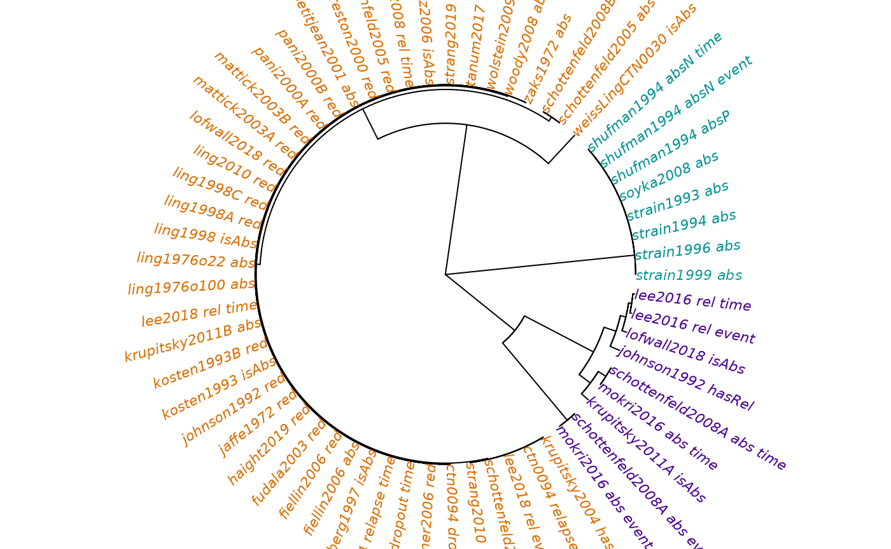

Empirically Contrasting Substance Use Disorder Treatment Outcome Definitions
Laura Brandt, Gabriel Odom, Ray Balise, and the CTN-0094 Team
2022-09-27
clustering_treatment_outcomes_20220910.RmdIntroduction and Motivation
Background
Over 750,000 Americans have died from a drug overdose since 1990.(1) Not all drugs are equally to blame: opioids were implicated in 67% of preventable overdose deaths in 2018.(2) Less than two years later, that 67% had skyrocketed to 77%, representing 64,000 deaths.(3) To combat this public health crisis, The National Institute on Drug Abuse’s Clinical Trials Network (CTN) has funded over 100 clinical trials and clinical trial supplemental studies to study the effects of new and existing medications to treat addiction, including opioid use disorder (OUD).(4) Many of these trials were successful in discovering new theraputic strategies, and currently nearly 1.3 million Americans use methadone, buprenorphine, and/or naltrexone in medication-assisted treatment for OUD (MOUD).
In order to measure the efficacy of new MOUD therapies, clinical trial teams will choose a priori a collection of metrics to define a “successful” treatment. These metrics are often called “treatment endpoints” or “outcomes”. A wide variety of treatment outcomes have been used in clinical trials since 1972 (Table 1 shows outcomes from 41 papers assessing MOUD).[ADD CITATIONS HERE?] These endpoints all assess participant success or failure in treatment via the results from scheduled urine drug screenings (UDS) or urine opioid screenings (UOS). Accurately measuring the efficacy of MOUD for clinical trial participants is paramount, but currently no “gold standard” trial outcomes exist.(5)
| Group | Endpoint | Class | Reference | Definition | Missing is |
|---|---|---|---|---|---|
| Abstinence | Continuous abstinence | logical | Ling et al., 1998 | % of participants who maintained 13 consecutive negative UOS (1 month) | Missing/not imputed |
| Abstinence | Continuous abstinence | logical | Kosten et al., 1993 | attaining at least 3 weeks of consecutive negative UOS | Missing/not imputed |
| Abstinence | Length of Initial Abstinence | survival | Schottenfeld, Chawarski, & Mazlan, 2008 | Days to 1st positive UOS after randomization | Positive |
| Abstinence | Length of Initial Abstinence | survival | Shufman et al., 1994 | Weeks between 1st day of NTX administration and 1st positive UOS | Missing |
| Abstinence | Length of Initial Abstinence | survival | Mokri, Chawarski, Taherinakhost, & Schottenfeld, 2016 | Days to 1st positive UOS | Positive |
| Abstinence | Longest period of abstinence | integer | Schottenfeld et al., 2008 | Longest period of negative UOS | Positive |
| Abstinence | Longest period of abstinence | integer | Schottenfeld et al., 2005 | Max. number of consecutive weeks of negative UOS | Missing |
| Abstinence | Complete Abstinence | logical | Krupitsky et al., 2011 | Confirmed opioid abstinence during weeks 5‐24 based on UOS | Positive |
| Abstinence | Complete Abstinence | logical | Lofwall et al., 2018 | No evidence of opioid use based on UOS (NOTE: minimal evidence of opioid use from UOS, not none) | Positive |
| Abstinence | Abstinence weeks | integer | Fiellin et al., 2006 | Weeks of confirmed opioid abstinence | Positive |
| Abstinence | Abstinence weeks | integer | Krupitsky et al., 2011 | Weeks of confirmed opioid abstinence | Positive |
| Abstinence | Abstinence period | logical | Weiss et al., 2011 CTN-0030 | Negative UOS during the last week AND for at least 2 of the previous 3 weeks of the third month of BUP/NX treatment | Positive |
| Relapse | Time to relapse | survival | CTN-0094 | Weeks to relapse (4 consecutive weeks of positive UOS) | Positive |
| Relapse | Time to study dropout | survival | CTN-0094 | Weeks to study dropout (4 consecutive weeks of missing UOS) | Missing |
| Relapse | Time to opioid use/relapse | survival | Schottenfeld et al., 2008 | Days to relapse (3 consecutive positive UOS) | Positive |
| Relapse | Time to opioid use/relapse | survival | Lee et al., 2016 | Weeks to relapse (≥10 days of opioid use in a 28‐day period [a positive UOS was computed as 5 days of opioid use]) | Positive |
| Relapse | Time to opioid use/relapse | survival | Lee et al., 2018 CTN-0051 | Weeks to relapse (starting at day 21 post-randomization: 4 consecutive weeks with positive UOS) | Positive |
| Relapse | Relapse/failure rate | logical | Krupitsky et al., 2004 | Relapse rate (3 consecutive positive UOS) | Positive |
| Relapse | Relapse/failure rate | logical | Krupitsky et al., 2006 | Relapse rate (3 consecutive positive UOS) | Positive |
| Relapse | Relapse/failure rate | logical | Johnson, Jaffe, & Fudala, 1992 | Failure rate: 2 consecutive positive UOS following 4 weeks of treatment | Positive |
| Reduction | Opioid use rate | ratio | Soyka, Zingg, Koller, & Kuefner, 2008 | Monthly rates of positive UOS | Missing/not imputed |
| Reduction | Opioid use rate | integer | Schwartz et al., 2006 | Number of positive UOS at 120-day follow-up | Missing/not imputed |
| Reduction | Opioid use rate | ratio | Strain, Stitzer, Liebson, & Bigelow, 1996 | Percentage of positive UOS – Overall AND summarized in consecutive 2-week blocks | Missing/not imputed |
| Reduction | Opioid use rate | ratio | Ling, Charuvastra, Kaim, & Klett, 1976 | Index of illicit morphine use ([0, 120]) | Positive |
| Reduction | Opioid use rate | ratio | Woody et al., 2008 | Percentage of positive UOS at weeks 4, 8, and 12 | Imputed |
| Reduction | Opioid use rate | ratio | Eissenberg et al., 1997 | subject retained in study at least 17 weeks AND subject showed 4 consecutive negative UDS between weeks 1-17 | Imputed |
| Reduction | Opioid use rate | ratio | Strain, Stitzer, Liebson, & Bigelow, 1993 | Rate of positive UOS through the end of the stable dosing period | Not defined |
| Reduction | Opioid use rate | integer | Zaks, Fink, & Freedman, 1972 | Number of positive UOS | Not defined |
| Reduction | Opioid use rate | ratio | Strain, Bigelow, Liebson, & Stitzer, 1999 | Percentage of positive UOS | Missing/not imputed |
| Reduction | Opioid use rate | ratio | Petitjean et al., 2001 | Weekly proportion of positive UOS (intent-to-treat and completer analysis) | Positive |
| Reduction | Opioid use rate | ratio | Shufman et al., 1994 | Percentage of positive UOS | Missing |
| Reduction | Opioid use rate | ratio | Strain, Stitzer, Liebson, & Bigelow, 1994 | Overall rate of positive UOS | Missing/not imputed |
| Reduction | Rate of negative UOS | logical | Strang et al., 2010 | ≥50% negative UOS during weeks 14-26 | Positive |
| Reduction | Rate of negative UOS | logical | Kosten et al., 1993 | ≥70% negative UOS during the 24-week trial period | Missing/not imputed |
| Reduction | Rate of negative UOS | ratio | Ling et al., 2010 | Percentage of negative UOS during weeks 1-16 of the trial | Positive |
| Reduction | Rate of negative UOS | ratio | Mattick et al., 2003 | “Percentage of clean urines (PCU)”: Rate of negative UOS for the time that the patient remained in the study | Missing/not imputed |
| Reduction | Rate of negative UOS | ratio | Mattick et al., 2003 | “treatment effectiveness percentage (TEP)”: Rate of negative UOS for the full 13‐week study (ITT) | Missing/not imputed |
| Reduction | Rate of negative UOS | ratio | Fiellin et al., 2006 | Percentage of negative UOS | Positive |
| Reduction | Rate of negative UOS | NA | Tanum et al., 2017 | Rate of negative UOS: Number of negative UOS divided by the total number of attended tests (group proportion) | Positive |
| Reduction | Rate of negative UOS | ratio | Haight et al., 2019 | Percentage of negative UOS from week 5 to week 24 | Positive |
| Reduction | Rate of negative UOS | ratio | Lofwall et al., 2018 | Mean percentage of negative UOS for weeks 1 to 24 | Positive |
| Reduction | Rate of negative UOS | ratio | Strang et al., 2019 | Proportion of negative UOS at the end of the 12‐week post-randomization time point | Positive |
| Reduction | Rate of negative UOS | ratio | Comer et al., 2006 | Percentage of negative UOS during 8 weeks of treatment | Positive |
| Reduction | Rate of negative UOS | ratio | Wolstein et al., 2009 | Number of negative UOS per number of weeks of study participation | Unknown |
| Reduction | Rate of negative UOS | ratio | Ling et al., 1998 | Mean percentage negative UOS | Missing/not imputed |
| Reduction | Rate of negative UOS | integer | Ling et al., 1998 | no. of negative UOS (“treatment effectiveness score”) | Missing/not imputed |
| Reduction | Rate of negative UOS | ratio | Pani, Maremmani, Pirastu, Tagliamonte, & Gessa, 2000 | PCC: Percentage ratio of negative UOS and the total number of UOS carried out for each patient during the period of treatment | Positive |
| Reduction | Rate of negative UOS | ratio | Pani, Maremmani, Pirastu, Tagliamonte, & Gessa, 2000 | TEC: Percentage ratio between the number of negative UOS and the number of UOS as per protocol | Positive |
| Reduction | Rate of negative UOS | ratio | Preston, Umbricht, & Epstein, 2000 | “Mean intervention percent negative”: Percentage of negative UOS in the treatment phase | Positive |
| Reduction | Rate of negative UOS | ratio | Schottenfeld et al., 2005 | Proportion of negative UOS | Missing |
| Reduction | Rate of negative UOS | ratio | Fudala et al., 2003 | Percentage of negative UOS | Missing |
| Reduction | Rate of negative UOS | ratio | Jaffe et al., 1972 | Percentage of treatment weeks characterized by negative UOS for patients who completed ≥8 weeks of the study | Imputed |
| Reduction | Rate of negative UOS | ratio | Johnson et al., 1992 | Average percentage of negative UOS | Positive |
Each row of Table 1 is an outcome used in a past clinical trial for MOUD. As preliminary work, our clinical team grouped these by clinical practice into three short-term outcome classes: abstinence, relapse, and substance use reduction.(6) Of note, these metrics also differed in how they considered a scheduled but incomplete UDS (i.e. a “missing” UDS). We removed outcomes which could not be used to measure subject-specific outcomes (e.g. “proportion of subjects in treatment group with positive UDS during study week 3”); we removed outcomes which could not yield a univariate metric of subject success (e.g. “number of positive UDS per three-week window over time”); we split papers which assessed multiple outcomes (e.g. complete abstinence between weeks 5-12 AND total number of abstinent weeks); and we combined papers which used identical outcomes. At the end of our literature search, we have 53 outcomes from registered clinical trials to consider.
Objectives
Clinically meaningful, patient-centric endpoints beyond abstinence are needed to define success in clinical trials. - Dr. Nora Vulkow, Address to CTN, April 2022
This is the first large-scale, empirical (data driven) comparison of MOUD clinical trial endpoints. Furthermore, this is the only standard and code-based library of treatment outcome definitions to date, and we believe it will be useful to all future substance use disorder clinical trials in NIDA’s CTN and in other substance use disorder research. Our scientific question is as follows: When applied to the same clinical trials data, do these outcomes follow the same clinically intuitive clusters (abstinence, relapse, use reduction)?
Methods
The Clinical Trials Data
The CTN-0094 Project research team harmonized data from 3 large-scale MOUD clinical trials:
- CTN-0027: “Starting reatment with Agonist Replacement Therapies (START)”;(7)
- CTN-0030: “Prescription Opiate Abuse Treatment Study (POATS)”;(8) and
- CTN-0051: “Extended-Release Naltrexone vs. Buprenorphine for Opioid Treatment (X:BOT)”.(9)
These three are nationally representative, prospective clinical trials with over 3600 combined participants. These trials treated participants for 16-24 weeks, and collected rich baseline substance use data, demographics, and medical/psychiatric evaluations.
We have 3560 fully de-identified subjects with demographics and weekly UDS results for the months they were in treatment, 2492 of whom completed randomization to a treatment arm. This harmonized data will be released in the R packages ctn0094data and ctn0094DataExtra. In order to summarize complex substance use patterns over the weeks of the multiple clinical trials, we standardized all dates to the day of trial consent, and we coded the urinalysis results for each study day/week as a quinary “word”.(10)
Computing Treatment Outcomes with CTNote
The software package CTNote:: for the R computing language contains algorithms which translate urine screen results of substance use patterns into clinical trial outcomes and endpoints of interest.(10) By executing various combinations of these algorithms, we were able to define in computer code each of the treatment outcome definitions in Table 1. Additionally, the supplemental material of the CTNote:: package includes a “library” of algorithms to calculate each definition listed in Table 1.
The input of each algorithm is a set of substance use pattern summaries as a quinary word for all clinical trial participants; the output of each algorithm is a calculated treatment endpoint for each participant included in the input. Now that we have an opioid-specific use pattern for each participant in these three harmonized clinical trials, and we also have a suite of computer functions to calculate each treatment endpoint, we can “cross” these two sets to calculate each endpoint for each trial participant. Each of these treatment endpoints are proxy measures for an unobserved outcome of interest (such as quality of life 5 years after treatment), but they all measure participant-specific treatment success or failure in one way or another. Note that by “treatment failure”, we mean that the treatment failed to help the participant, not that the participant themselves is a failure in treatment. These clinical trials evaluated the efficiacy of treatments, not the adherence of participants to behavioral norms.
There are 53 composite outcomes, but a few of these outcomes involve more than one component. For example, a “time to relapse” metric would involve both the length of time from induction to the first observed relapse and an indicator if a relapse was observed. While this type of data is structurally similar to survival data (11), we note that (unlike standard survival analysis) the censoring indicator will rarely be independent of the time-to-event measure. Counting both both “time” and “event” metrics independently, we have 61 distinct endpoints.
Hierarchical Clustering Process Details
We applied each of the of 61 distinct MOUD treatment endpoints in our library to all 2492 participants who had been randomized to a treatment. This process enables us to empirically contrast endpoints via hierarchical clustering. Our process is as follows:
- We calculated all 61 distinct endpoints for each subject, resulting in a \(2492 \times 61\) table of outcome metric values.
- We scaled all “time” and “count” endpoints to be ratios of their maximum value. For example, if an endpoint measures the total number of negative UDS, then we divide this count for each participant by the maximum observed count across all participants.
- We re-contextualized all outcomes into a “larger value is better” interpretation. That is, for outcomes where a larger numeric value would indicate a worse treatment outcome, we transformed the outcome via \(f(x) = \text{max}(x) - x\).
- To reduce the influence of a single participant’s use pattern on the clustering results, we calculate the Pearson correlation matrix (using pairwise complete observations) on a bootstrap sample(12) of the data rows defined in Step 1.
- We perform hierarchical clustering(13) on the bootstrap correlation matrix from Step 3 using complete linkage, and cut the resulting tree into \(k = 2, 3, \ldots, 15\) clusters.
- For each number of clusters \(k\), we generate a \(61 \times 61\) network connection matrix. The \(\{i,j\}\) values of this matrix are 1 if treatment endpoints \(i\) and \(j\) are in the same cluster, 0 otherwise.
- We repeat Steps 4-6 10,000 times for each \(k\), and sum these matrices. In the end, a value of \(\{i,j\} = 10,000\) means that in every random bootstrap sample, the treatment endpoints \(i\) and \(j\) are in the same cluster. Similarly, a value of \(\{i,j\} = 0\) means that the treatment endpoints \(i\) and \(j\) are never in the same cluster for any random bootstrap sample.
- We also performed k-means clustering(14) for each number of clusters. We found that the optimal number of clusters was \(k = 3\) (by observing an “elbow” in the total within-cluster Sum of Squares plot).
Hierarchical Clustering Results
The bootstrap clustering results for \(k = 3\) are shown in the accompanying figure.

Endpoints Cluster 1
The teal cluster on the top right of the wheel, including Shufman et al. (15) and Strain et al. (16–19) endpoints all have the following trait in common: they ignore or remove missing UDS from their calculation. Notice that this teal cluster has 0 subsplits; in every single bootstrap sample, these metrics are all clustered together. We believe that these endpoints are far too lenient, because missing UDS in opoiod trials is commonly a negative prognostic indicator [CITE THE LEADING CTN-0094 PAPER HERE].
Endpoints Cluster 2
In contrast, the purple cluster on the bottom right of the wheel has the most variability and highest count of sub-clusters. These clusters all depend heavily on the UDS results from a single short interval. For example, the Lofwall et a. (2018) (20) endpoint requires a negative UDS in week 12 (with missing UDS counted as positive), otherwise the treatment will be counted as a failure. This means that if a participant was present in the clinic with negative UDS for 11 weeks in a row, but missed the visit on week 12, the treatment would have been counted as a failure. Similarly, the Krupitsky et al. (2011) (21) endpoint requires complete abstinence from study week 5 to study week 24, and missing UDS are imputed to be positive. The endpoints in this cluster are far too harsh to be meaningful in practice, which is why the clustering results from these endpoint have so much variability (the most number of subclusters).
Endpoints Cluster 3
The larger orange cluster on the left side of the wheel is what we have termed the “Goldilocks” cluster: these outcomes are not too lenient by ignoring missing UDS, and they are not too harsh by measuring success or failure of an entire course of treatment based on a single week or pair of weeks. Of note, our a priori hypothesis that these endpoints would naturally cluster into “abstinence, relapse, and use reduction” did not hold true. Instead, our “Goldilocks” cluster contains abstinence, relapse, and use reduction endpoints. We believe that current and future MOUD clinical trials should use outcomes from this “Goldilocks” cluster, or–if researchers have the strong desire to create a set of bespoke outcomes–new outcomes should adhere to these considerations: do not ignore missing UDS, and do not make treatment failure too sensitive to a single week’s UDS.
Discussion
We have clustered these outcomes empirically, and we found an entire cluster only containing outcomes which ignored missing UDS–further giving credence to the theory that missing UDS are highly informative for opioid use treatment.
NEEDS MORE LOVE HERE